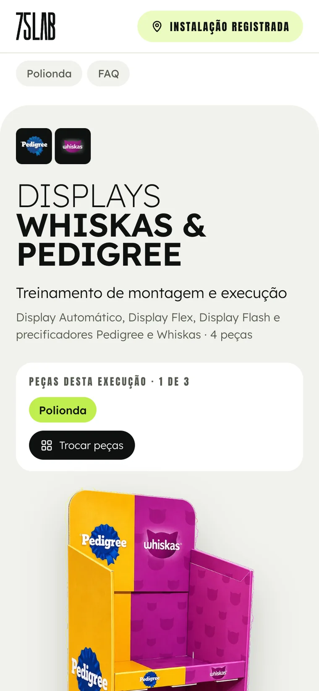
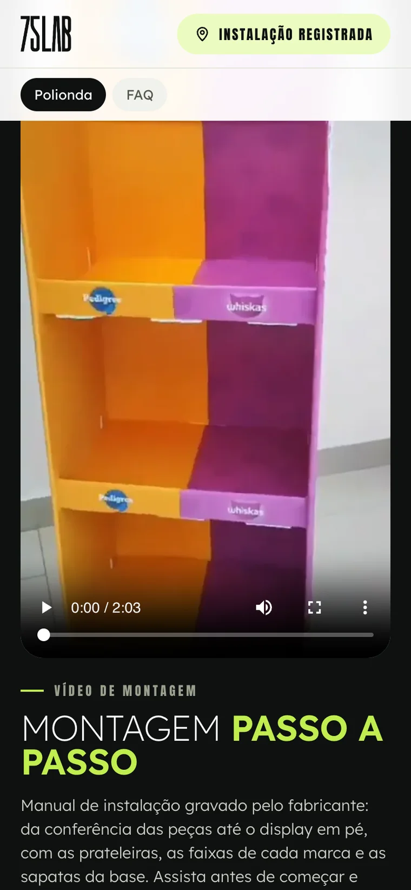
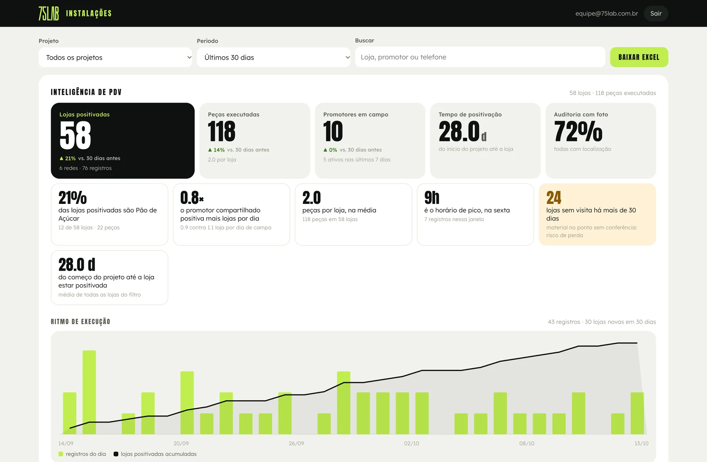
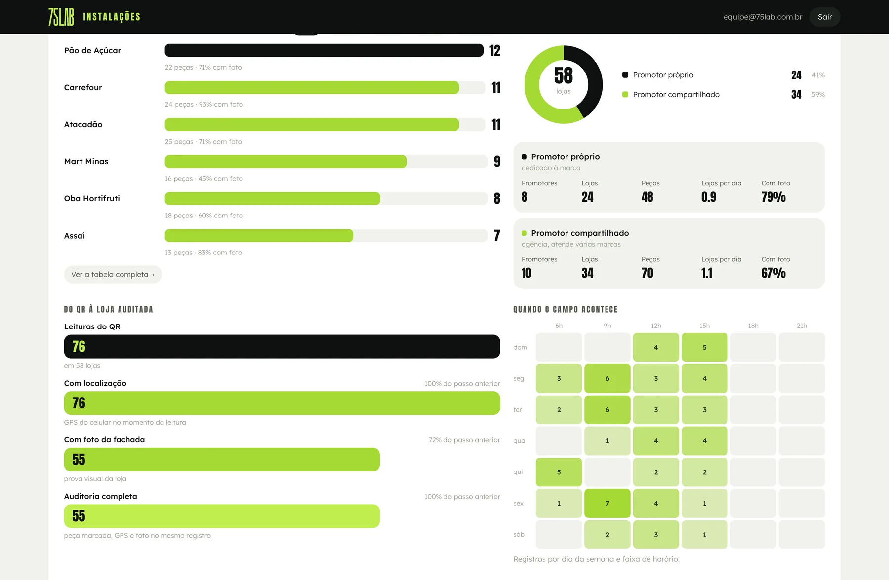
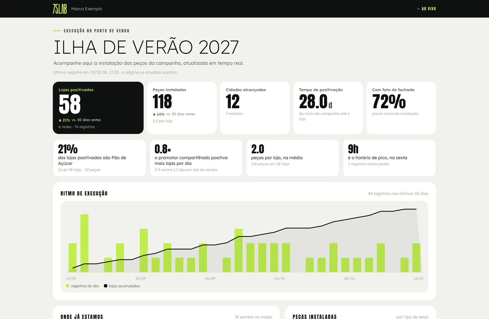

Sai da produção com o seu QR
Um código único por peça, impresso na arte ou em etiqueta aplicada.
A distância entre o CD e a gôndola agora tem dado.
Duas tecnologias, explicadas uma de cada vez: o QR na peça e a tag ao vivo.
Nenhuma dessas dores é de planejamento. Todas são de falta de dado no momento em que a coisa acontece.
Hoje a resposta vem por foto solta no grupo de WhatsApp, quando vem. O investimento em material é aprovado no plano e conferido no boato.
Primeiro o QR, que já resolve a maior parte. Depois a tag ao vivo, para quem precisa saber onde a peça está agora.
Um código único por peça, impresso na arte ou em etiqueta aplicada.
Sem aplicativo, sem cadastro e sem senha para decorar. Abre no navegador.
Quem instalou, em qual loja e a prova visual, com a hora exata do celular.
O número sobe na hora, para a sua equipe e para quem contratou a campanha.
Quatro segundos do promotor na loja viram o dado que a marca cobra o mês inteiro.



O mesmo código que prova a instalação ensina a montar. O material chega na loja com o manual dentro.
Cada leitura vira linha, mapa e gráfico na mesma hora. Ninguém digita planilha, ninguém espera o fim da ação para saber onde a campanha está.


Um endereço por campanha. Quem tem o link acompanha os números subindo em tempo real, do celular, sem conta e sem senha.

Cada peça rastreada custa o mesmo, do primeiro pedido ao milésimo. A plataforma inteira vai junto: página de montagem, painel de execução e link ao vivo para o cliente.
Preço por peça, sem impostos extraordinários, frete ou personalização de arte. O volume é fechado por campanha.
Alguém precisa ler. O dado nasce no momento da instalação e da revisita.
Ninguém precisa ler. A peça avisa sozinha onde está, do CD até a loja e durante os meses de exposição.
A tag é assinatura: o rastreio fica ligado enquanto a campanha estiver no ar. O registro do QR vai junto, sem custo extra.
Total de R$ 163,62 por display.
Total de R$ 245,43 por display.
mais escolhidoTotal de R$ 327,24 por display.
No parcelado mensal, R$ 34,09 por display por mês. À vista, 20% de desconto.
Campanha de ciclo curto, material entregue direto na loja.
Display de valor, que roda meses e passa por CD.
Somos a aceleradora de trade marketing que fica dos dois lados do balcão: cria a peça e prova que ela chegou ao ponto de venda.